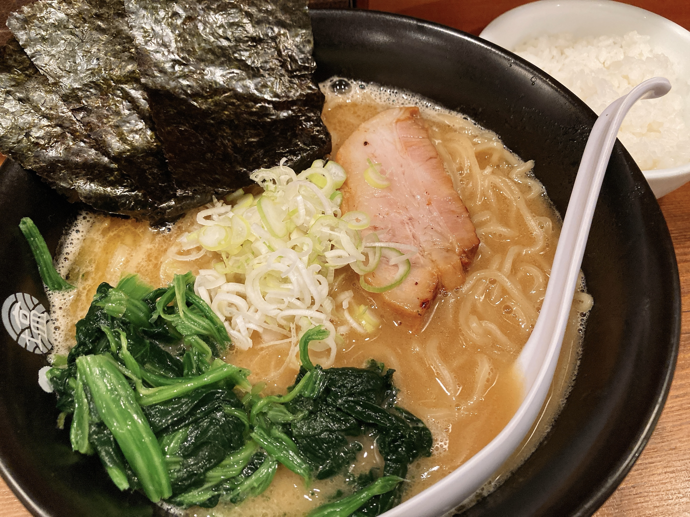

やっぱり鶏肉は素晴らしかった
またこいつ鶏肉の話してるよ。はい。
今日は前日にお昼ごはんを準備し損ねていて、でも暑すぎて外に出る気になれなかったので、なんとうーばーいーちゅに頼ってしまうという。
高めの課金をするかわりに鶏肉とブロッコリー食べ放題みたいなお店（Uber限定かな？）がおおおにはあります。前から気になってて初めて試してみたんだけど、想像以上に鶏むね肉がしっかりぷりっぷりでQOLが爆上がりした。昼飯にしては高すぎるのが玉に瑕だなあ。もうちょい安けりゃガチで毎日食べてた。
ダンマクカグラのびっくり古明地妹待遇で、姉派の🍳はブチ切れていた（理不尽）。そしてキレながらガチャを回すと何故か違う方の妹が出まくった。
明らかに何か間違えてる pic.twitter.com/RkB2alswmN
— ₍₍⁽⁽🍳₎₎⁾⁾ (@sal_pipr) August 24, 2021
合計3枚。なんでやねん。ライフ回復ミタマバースト、深化できてもあんまり嬉しくないのでなおさらかなしい。
キレたのでしばらく妹は描きません（？？？）。
夕飯は久しぶりにひるがお。

このスープ、かなり醤油なのでご飯が合う。
最近日記を翌日に書くようになってしまったのだけれど、前日が何もない日だとわりと書くことに困ってしまう。おえかきを進めていたけれど、見せられるほど進んだわけではないので……。
明後日くらいには仕上げたいので応援してください pic.twitter.com/4LiNWFpW23
— ₍₍⁽⁽φ( '༥' )₎₎⁾⁾ (@slpp_bild) August 24, 2021
ほんとに明後日に仕上がるかしら？別の進捗が積み上がってて雲行きが怪しい。がっつり線画描き込むのはやっててたのしいので作業を進めること自体は難しくないんだけど、なんせ時間がかかるので毎日ちまちまって感じになって厳しい。夏休みとは……。